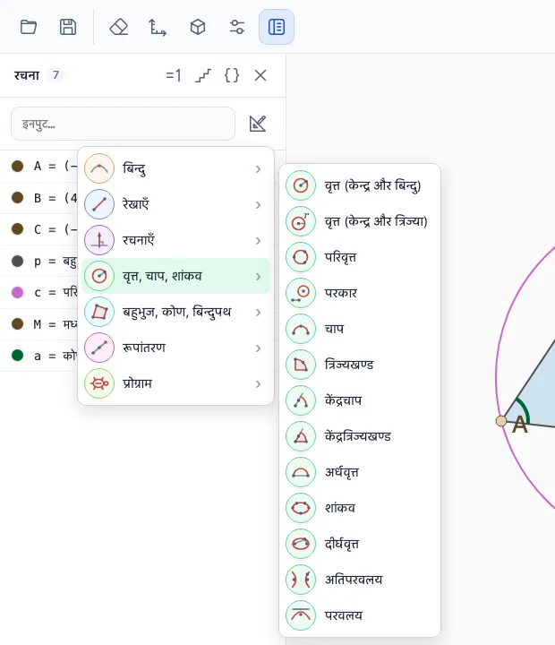

टूल मेनू

उपयोग
- इनपुट पंक्ति के दाईं ओर मेनू खोलता है: वलय के परिवार, वही रंग, वही क्रम, फिर पॉइंटर ले जाने या छूने पर उनके टूल।
- मेनू में वलय के सभी टूल और कुछ और भी हैं (नीचे वलय चिह्न)। समतल और ठोस परिवार तथा 3D चिह्नित टूल केवल 3D दृश्य में दिखते हैं।
- पहला चुना गया ऑब्जेक्ट कोई भी ऐसा स्थान लेता है जिसे उसका प्रकार स्वीकार करे: लंब के लिए रेखा बिन्दु से पहले आ सकती है।
- टूल स्थायी है: हर ऑब्जेक्ट के बाद वह फिर से अपने पहले आर्गुमेंट की प्रतीक्षा करता है। मेनू का बटन उसका आइकन ले लेता है और बार में हो गया वाली पट्टी दिखती है।
- बाहर निकलना: हो गया, Esc, संकेत का ✕, मेनू का बटन (जो मेनू फिर खोलता है), रबड़, चरण-दर-चरण, या किसी पाठ पंक्ति में क्लिक। पूर्ववत करना, फिर से करना, गुण और 3D दृश्य टूल को बनाए रखते हैं।
चयन के साथ
पहले चुने गए ऑब्जेक्ट चुने गए टूल के आर्गुमेंट बन जाते हैं: देखें बहु-चयन से रचना।
सभी टूल
हर टूल के लिए: क्या चुनना है, फिर लिखी जाने वाली पंक्ति।
बिन्दु
-
बिन्दुवलयवह बिन्दु जिसे आप छूते हैं: खाली जगह पर मुक्त, किसी ऑब्जेक्ट पर, या दो ऑब्जेक्टों के प्रतिच्छेद पर।
बिन्दु(c, t) -
प्रतिच्छेदवलयएक ही स्पर्श से कोई कटान-बिन्दु, या दोनों ऑब्जेक्ट एक के बाद एक।
प्रतिच्छेद(a, b) -
मध्यबिन्दुवलयदो बिन्दु, या एक रेखाखण्ड।
मध्यबिन्दु(A, B) -
केन्द्रवलयएक वृत्त: उसका केन्द्र।
केन्द्र(c) -
अन्यप्रतिच्छेददो ऑब्जेक्ट, फिर उनके किसी प्रतिच्छेद पर पहले से रखा बिन्दु: उससे सबसे दूर वाला प्रतिच्छेद बिन्दु।
अन्यप्रतिच्छेद(a, b, P) -
अंतःकेंद्रतीन बिन्दु, किसी त्रिभुज के शीर्ष: उसके अंतर्वृत्त का केन्द्र।
अंतःकेंद्र(A, B, C) -
केन्द्रकतीन बिन्दु: त्रिभुज का केन्द्रक।
केन्द्रक(A, B, C) -
परिकेंद्रतीन बिन्दु: परिवृत्त का केन्द्र।
परिकेंद्र(A, B, C) -
लंबकेंद्रतीन बिन्दु: त्रिभुज का लंबकेंद्र।
लंबकेंद्र(A, B, C)
रेखाएँ
-
रेखाखण्डवलयदो बिन्दु, उसके अंत्य बिन्दु।
रेखाखण्ड(A, B) -
रेखावलयरेखा के दो बिन्दु।
रेखा(A, B) -
किरणवलयदो बिन्दु: आरंभ-बिन्दु, फिर किरण का एक बिन्दु।
किरण(A, B) -
सदिशवलयदो बिन्दु: आरंभ-बिन्दु, फिर अंत-बिन्दु।
सदिश(A, B)
रचनाएँ
-
लंबरेखावलयएक बिन्दु और एक रेखा, किसी भी क्रम में। 3D में, एक रेखा या एक समतल।
लंबरेखा(P, d) -
समानांतररेखावलयएक बिन्दु और एक रेखा, किसी भी क्रम में।
समानांतररेखा(P, d) -
लम्बसमद्विभाजकवलयदो बिन्दु, या एक रेखाखण्ड।
लम्बसमद्विभाजक(A, B) -
कोणसमद्विभाजकवलयतीन बिन्दु: पहली भुजा का एक बिन्दु, शीर्ष, दूसरी भुजा का एक बिन्दु।
कोणसमद्विभाजक(A, O, B) -
स्पर्शरेखाएक बिन्दु, फिर एक वृत्त, शांकव या किसी फलन का ग्राफ़। टूल स्पर्शरेखा क्रमांक 1 देता है; दूसरी के लिए उसकी पंक्ति में यह संख्या 2 कर दें।
स्पर्शरेखा(P, c, 1)
वृत्त, चाप, शांकव
-
वृत्त (केन्द्र और बिन्दु)वलयकेन्द्र, फिर वृत्त का एक बिन्दु।
वृत्त(O, A) -
वृत्त (केन्द्र और त्रिज्या)वलयकेवल केन्द्र: त्रिज्या, लगभग 150 पिक्सेल, बाद में वृत्त को खींचकर या उसकी पंक्ति में बदली जाती है।
वृत्त(O, 3.8) -
परिवृत्तवलयवृत्त के तीन बिन्दु।
परिवृत्त(A, B, C) -
गोलावलय3Dकेन्द्र, फिर गोले का एक बिन्दु।
गोला(O, A) -
परकारत्रिज्या देने वाले दो बिन्दु, फिर केन्द्र।
परकार(A, B, O) -
वृत्त (केन्द्र, दिशा और त्रिज्या)3Dकेन्द्र, फिर एक रेखा (अक्ष) या एक समतल (वृत्त के समानांतर), फ़र्श सहित। त्रिज्या लगभग 150 पिक्सेल।
वृत्त(O, 3.8, d) -
वृत्त (अक्ष और बिन्दु)3Dएक रेखा, यानी अक्ष, फिर वृत्त का एक बिन्दु।
वृत्त(d, P) -
चापतीन बिन्दु: आरंभ, बीच से गुज़रने वाला एक बिन्दु, अंत।
चाप(A, B, C) -
त्रिज्यखण्डतीन बिन्दु, चाप की तरह: उससे घिरा त्रिज्यखण्ड।
त्रिज्यखण्ड(A, B, C) -
केंद्रचापकेन्द्र, आरंभ, फिर उस किरण का एक बिन्दु जहाँ चाप रुकता है (वामावर्त)।
केंद्रचाप(M, A, B) -
केंद्रत्रिज्यखण्ड
केंद्रचापकी तरह: त्रिज्यखण्ड।केंद्रत्रिज्यखण्ड(M, A, B) -
अर्धवृत्तदो बिन्दु, व्यास के सिरे: [AB] के बाईं ओर का अर्धवृत्त।
अर्धवृत्त(A, B) -
शांकवशांकव के पाँच बिन्दु। दूसरे बिन्दु से ही, पूर्वावलोकन वृत्त के सबसे निकट वाला शांकव दिखाता है।
शांकव(A, B, C, D, E) -
दीर्घवृत्तदोनों नाभियाँ, फिर दीर्घवृत्त का एक बिन्दु।
दीर्घवृत्त(F, G, P) -
अतिपरवलयदोनों नाभियाँ, फिर अतिपरवलय का एक बिन्दु।
अतिपरवलय(F, G, P) -
परवलयनाभि, फिर नियता।
परवलय(F, d)
बहुभुज, कोण, बिन्दुपथ
-
बहुभुजवलयशीर्ष एक-एक करके, फिर बंद करने के लिए पहला शीर्ष दोबारा।
बहुभुज(A, B, C) -
कोणवलयतीन बिन्दु: पहली भुजा का एक बिन्दु, शीर्ष, दूसरी भुजा का एक बिन्दु।
कोण(A, O, B) -
बिन्दुपथवलयऐसा बिन्दु जो ऑब्जेक्ट पर किसी बिन्दु पर निर्भर है: उसका बिन्दुपथ जब वह बिन्दु अपने ऑब्जेक्ट पर चलता है।
बिन्दुपथ(M, P) -
समबहुभुजदो क्रमागत शीर्ष: टूल एक वर्ग देता है; उसकी पंक्ति में भुजाओं की संख्या बदलें।
समबहुभुज(A, B, 4)
रूपांतरण
-
केन्द्रीय सममितिवलयरूपांतरित किया जाने वाला बिन्दु, फिर केन्द्र।
परावर्तन(P, O) -
अक्षीय सममितिवलयरूपांतरित किया जाने वाला बिन्दु और अक्ष, किसी भी क्रम में।
परावर्तन(P, d) -
घूर्णनबिन्दु, फिर केन्द्र: चौथाई चक्कर, जिसे उसकी पंक्ति में बदला जा सकता है।
घूर्णन(P, O, 90) -
स्थानांतरणबिन्दु, फिर सदिश।
स्थानांतरण(P, u) -
आवर्धनबिन्दु, फिर केन्द्र: अनुपात 2, जिसे उसकी पंक्ति में बदला जा सकता है।
आवर्धन(P, O, 2) -
व्युत्क्रमणबिन्दु, फिर व्युत्क्रमण वृत्त।
व्युत्क्रमण(P, c)
समतल
-
समतल3Dतीन बिन्दु, या एक बिन्दु और एक रेखा।
समतल(A, B, C) -
समांतरसमतल3Dएक बिन्दु और एक समतल (फ़र्श सहित): बिन्दु से होकर समानांतर समतल।
समांतरसमतल(A, p) -
लंबसमतल3Dएक बिन्दु और एक रेखा: रेखा पर लंब समतल।
लंबसमतल(A, d)
ठोस
-
बेलन3Dदो बिन्दु, अक्ष के सिरे। त्रिज्या लगभग 150 पिक्सेल।
बेलन(A, B, 3.8) -
शंकु3Dआधार का केन्द्र, फिर शीर्ष। त्रिज्या लगभग 150 पिक्सेल।
शंकु(A, B, 3.8) -
घन3Dएक ही समतल के या एक ही ऊँचाई के दो बिन्दु, अन्यथा तीन बिन्दु (देखें 3D)।
घन(A, B, C) -
प्रिज़्म3Dएक बहुभुज, यानी आधार, फिर एक बिन्दु, सामने वाले फलक का शीर्ष।
प्रिज़्म(p, P) -
पिरामिड3Dएक बहुभुज, यानी आधार, फिर शीर्ष।
पिरामिड(p, S) -
अनुप्रस्थकाट3Dएक ठोस (गोला, बेलन, शंकु, बहुफलक) और एक समतल, किसी भी क्रम में।
अनुप्रस्थकाट(s, p) -
जाल3Dघन, प्रिज़्म या पिरामिड: उसका समतल जाल।
जाल(c, 1)
रूपांतरण किसी बिन्दु का प्रतिबिम्ब बनाते हैं।
केवल कीबोर्ड से: स्थिरबिन्दु, शीर्ष,
स्लाइडर, सूची, त्रिविम प्रतिच्छेद,
दीर्घवृत्त(F, G, a) और
अतिपरवलय(F, G, a) (देखें
कमांड)।